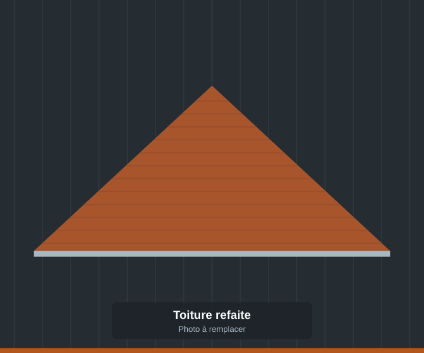
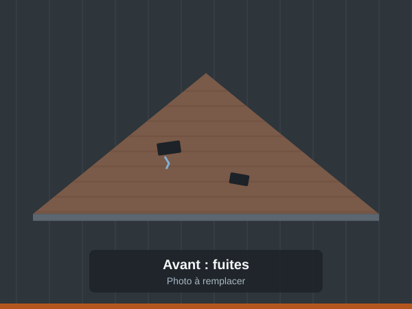
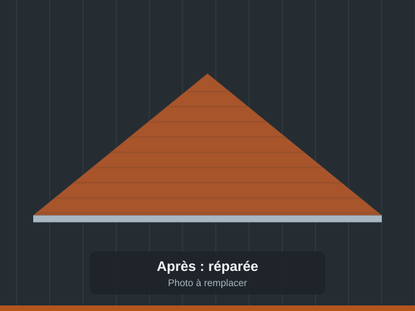
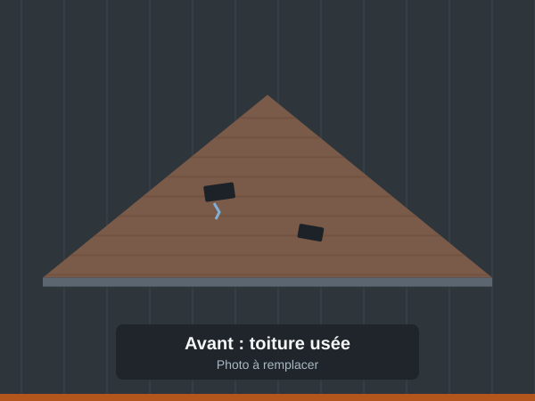
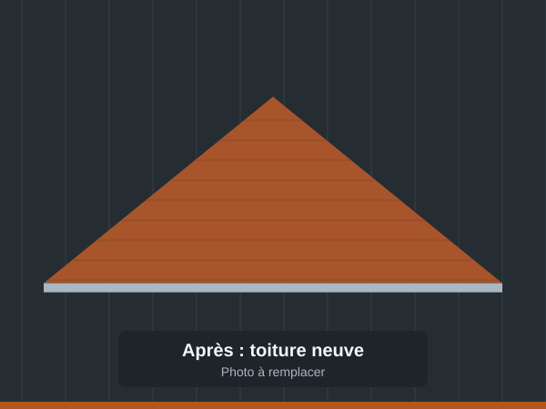
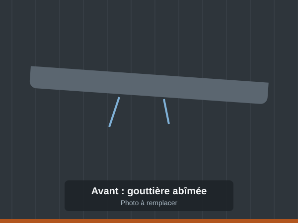
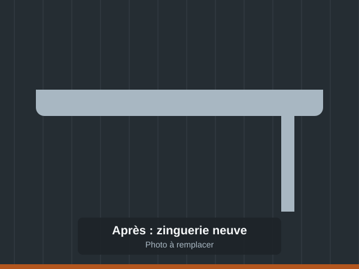
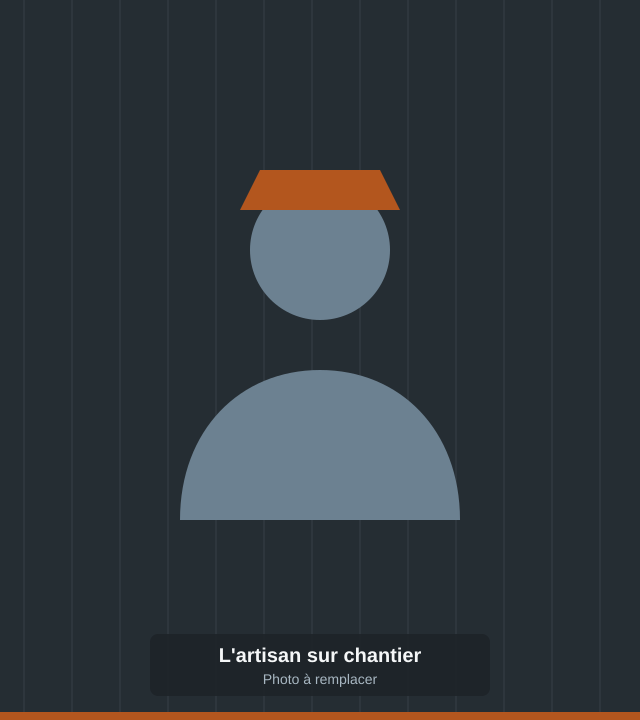

Lun.–Ven. 7h30–20h · Sam. 7h30–16h
Couvreur-zingueur à Morvillers-Saint-Saturnin Une toiture saine, un artisan qui répond.
Fuite, tuiles déplacées, gouttière qui déborde ou toiture à refaire : je me déplace rapidement, je vous dis franchement ce qu'il faut faire, et je le fais proprement. Devis gratuit.

- Intervention rapideFuite ou urgence : on vient vite.
- Travail soignéChantier propre, finitions nettes.
- Artisan localBasé à Morvillers-Saint-Saturnin.
- Devis gratuitSur place, sans engagement.
Prestations
Du petit dépannage à la toiture complète
Tuiles, zinc ou bac acier : chaque toiture est différente. Je viens voir, j'explique, puis je chiffre. Tarifs : devis gratuit sur demande.
-
Urgence
Réparation de fuites de toiture
Recherche de l'origine de la fuite et réparation, sur toiture en tuiles comme en zinc : tuiles cassées ou glissées, joints, raccords, faîtage.
-
Réfection et changement de toiture
Dépose de l'ancienne couverture, contrôle de la charpente et des liteaux, pose d'une toiture neuve et étanche.
-
Zinguerie
Gouttières, descentes, bandes de rive, solins et noues : tout ce qui évacue l'eau et protège les jonctions de votre toit.
-
Inspection de toiture
Un état des lieux clair de votre toit avant l'hiver, après une tempête ou avant un achat. Vous savez ce qui presse, et ce qui peut attendre.
-
Couverture tuiles et bac acier
Pose de couverture en tuiles pour la maison, en bac acier pour garages, hangars, dépendances et bâtiments agricoles.
-
Un doute sur votre toit ?
Une tache au plafond, une tuile au sol, une gouttière qui coule ? Appelez, on en parle.
Appeler l'artisan
Réalisations
Avant, après : le travail parle de lui-même
-

Avant 
Après Réparation de fuites · toiture zinc et tuiles
-

Avant 
Après Changement de toiture complète
-

Avant 
Après Zinguerie · gouttières et bandes de rive

L'artisan
Un couvreur du coin, joignable et sérieux
AS Couvreur Zingueur est installé au 10 route du Coq Gaulois, à Morvillers-Saint-Saturnin. J'interviens chez les particuliers du village et des environs pour tout ce qui touche à la toiture et à la zinguerie.
Ma façon de travailler est simple : je réponds au téléphone, je viens rapidement, je vous montre ce que j'ai constaté et je vous remets un devis clair. Sur le chantier, je travaille proprement et je laisse les lieux nets.
- Vous appelez ou écrivezVous m'expliquez le problème, photos à l'appui si vous en avez.
- Je viens voirDiagnostic sur place et devis gratuit, sans engagement.
- Je réalise les travauxÀ la date convenue, avec un chantier propre à la fin.
Avis Google
Ils m'ont confié leur toiture
5,0/5
Note moyenne sur Google
9 avis
-
★★★★★
Très bon travail pour réparer des fuites sur une toiture en zinc et tuiles. Recommande.
-
★★★★★
Intervenu rapidement pour un changement de toiture complète. Recommande.
-
★★★★★
« Super entreprise, très bon travail, je recommande. »
Devis gratuit
Parlons de votre toiture
Le plus rapide : un appel. Vous pouvez aussi décrire votre besoin ci-dessous, je vous rappelle.
10 route du Coq Gaulois
80290 Morvillers-Saint-Saturnin
Horaires
| Lundi | 7h30–20h |
|---|---|
| Mardi | 7h30–20h |
| Mercredi | 7h30–20h |
| Jeudi | 7h30–20h |
| Vendredi | 7h30–20h |
| Samedi | 7h30–16h |
| Dimanche | Fermé |